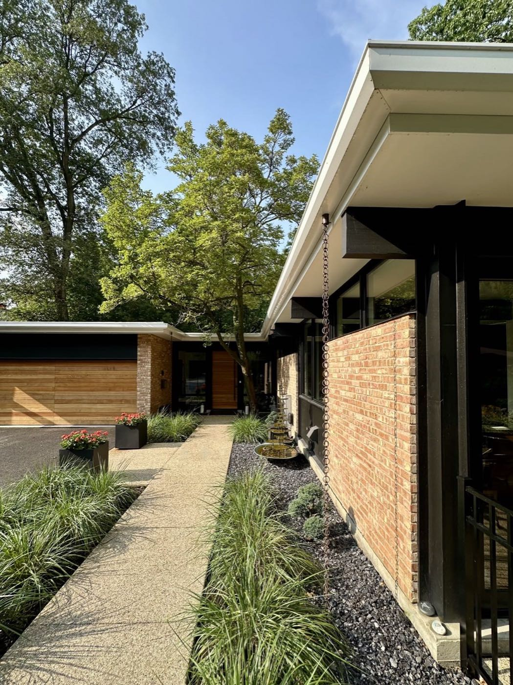
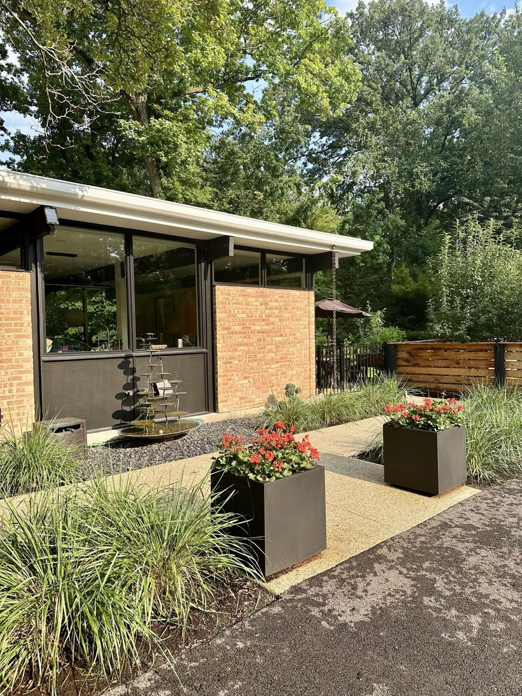
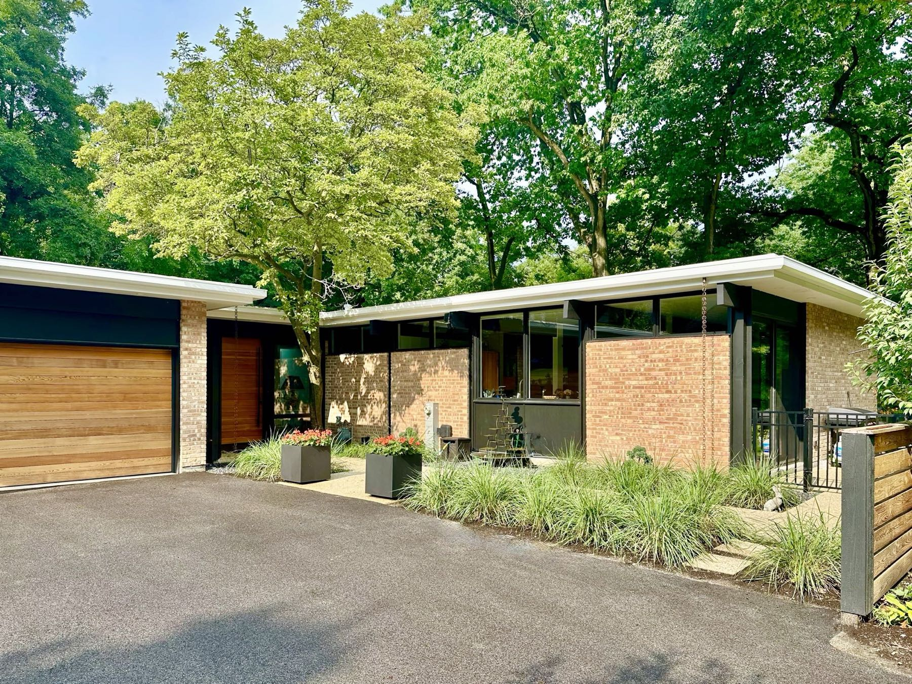
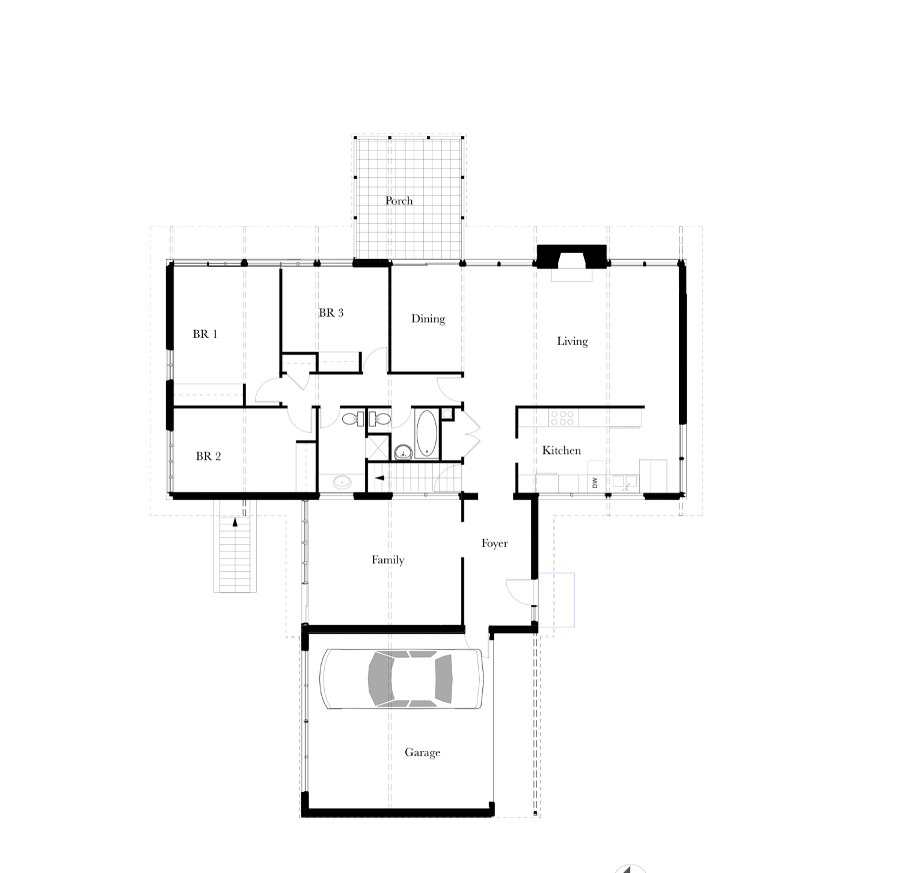
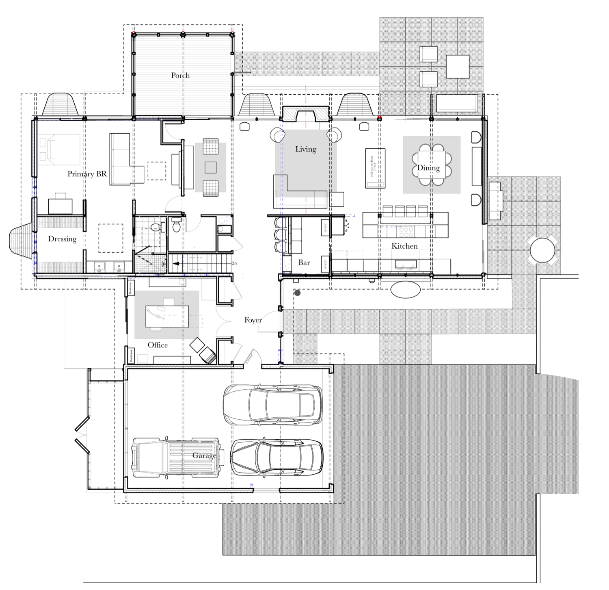
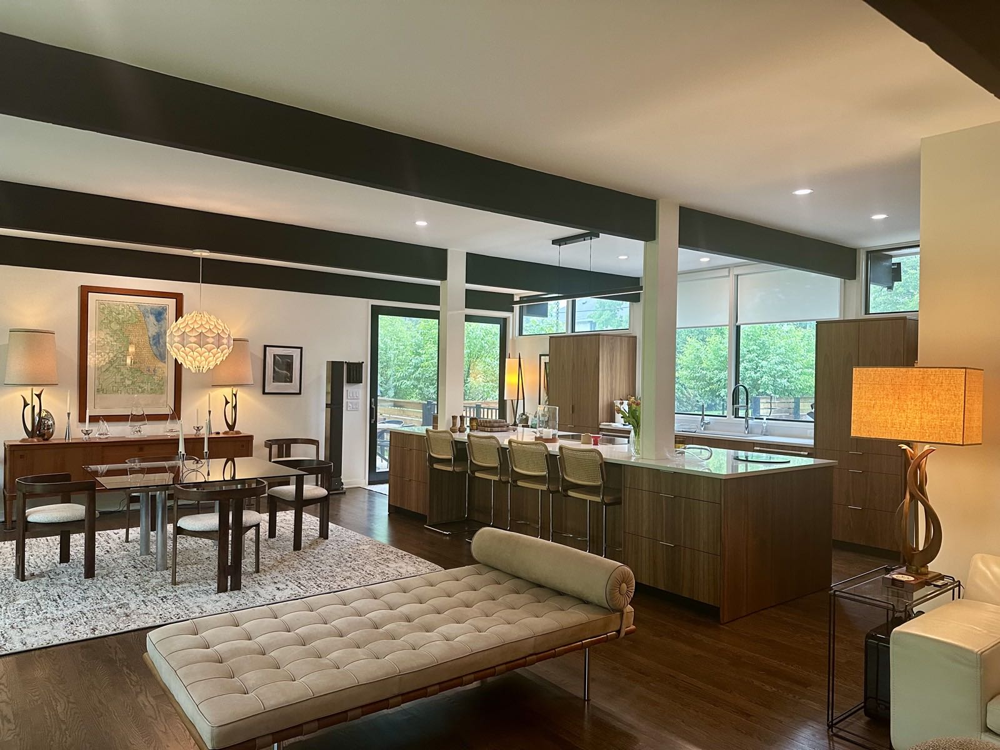
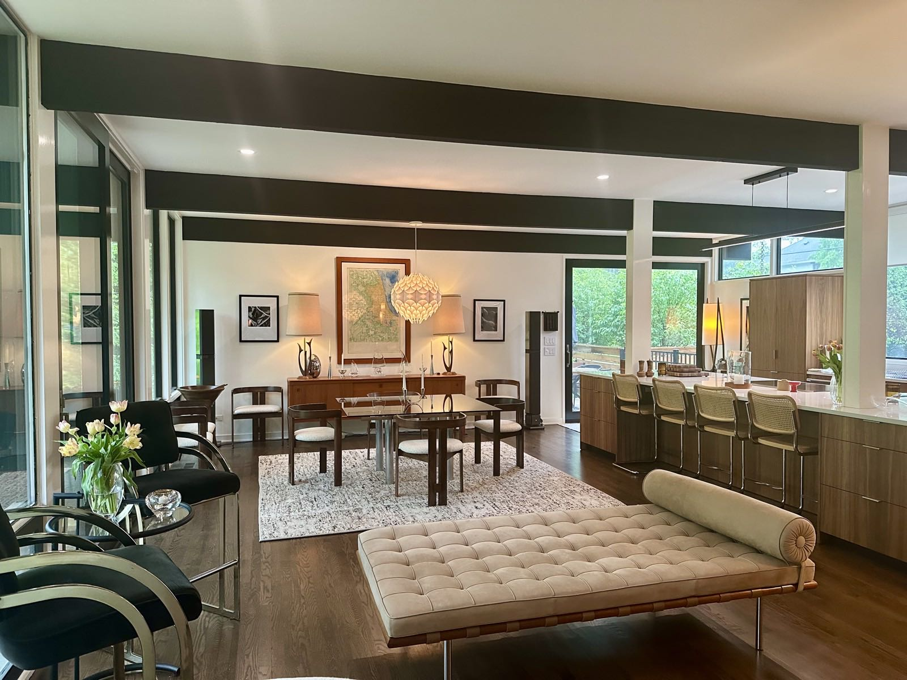
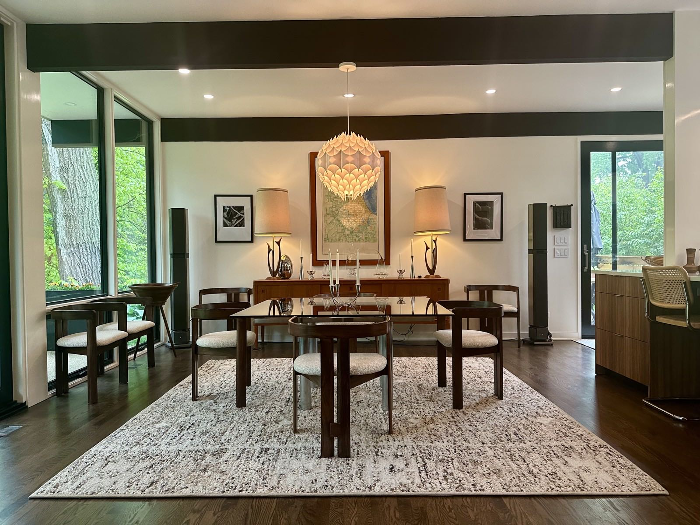
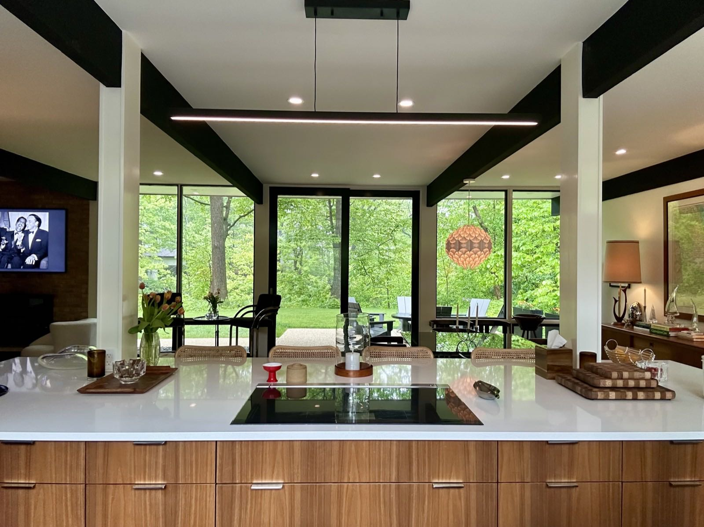
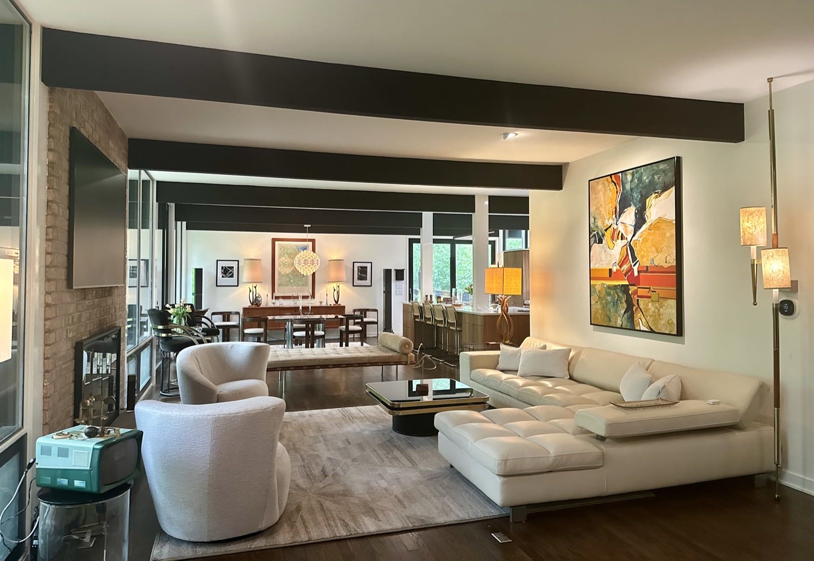

Exterior
Approach and
Approach and
entry court



Residential · Renovation
Lake Bluff, Illinois. A 1954 house on a site bordered by three ravines, renovated in two phases and completed in 2024.

Originally constructed in 1954, this mid-century modern residence occupies a distinctive site bordered by three ravines, with seasonal views of Lake Michigan.
Additions completed by the home's second owner during the 1970s departed from the clarity and character of the original architecture.
Following our purchase of the property in 2017, the first phase of renovation focused on the lower level, creating three bedrooms, three bathrooms, a family room, and a laundry room. A second phase, completed in 2024, addressed the main level and exterior, restoring the home's mid-century modern character while adapting it for contemporary living.
Although the exterior reflected its mid-century origins, the interior was divided into a series of small, compartmentalized rooms. Removing most of the interior partitions revealed the original timber ceiling beams and established an open, light-filled floor plan. Generous living spaces now extend naturally into a screened porch and adjoining outdoor patios, strengthening the connection between the house and its wooded setting.
The renovated residence efficiently accommodates four bedrooms and four-and-one-half bathrooms within approximately 2,500 square feet.

Three bedrooms and a bathroom core occupied the west half of the main level. Living, dining and kitchen were separate rooms, and the porch sat off the dining room behind a solid wall.

With bedrooms moved to the lower level in the first phase, the main level opens into a single living, dining and kitchen space. The west end became a primary suite and dressing room, with an office off the foyer and the porch now opening directly from the living area.






